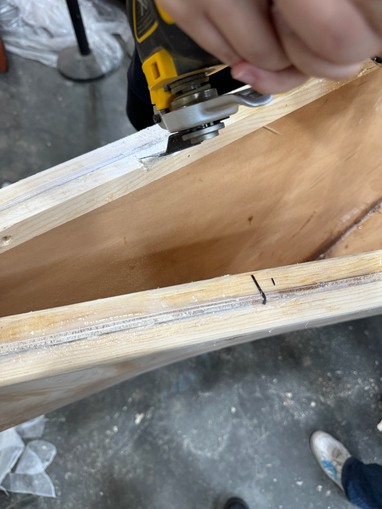
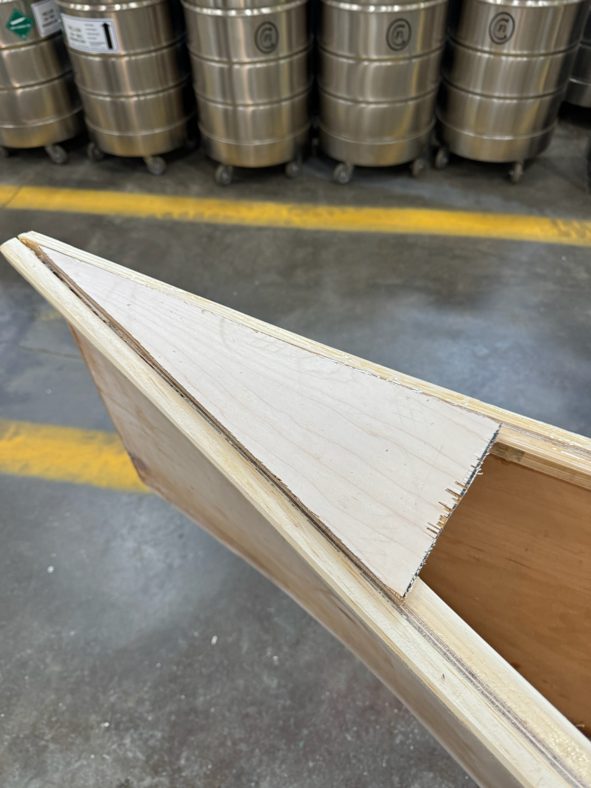
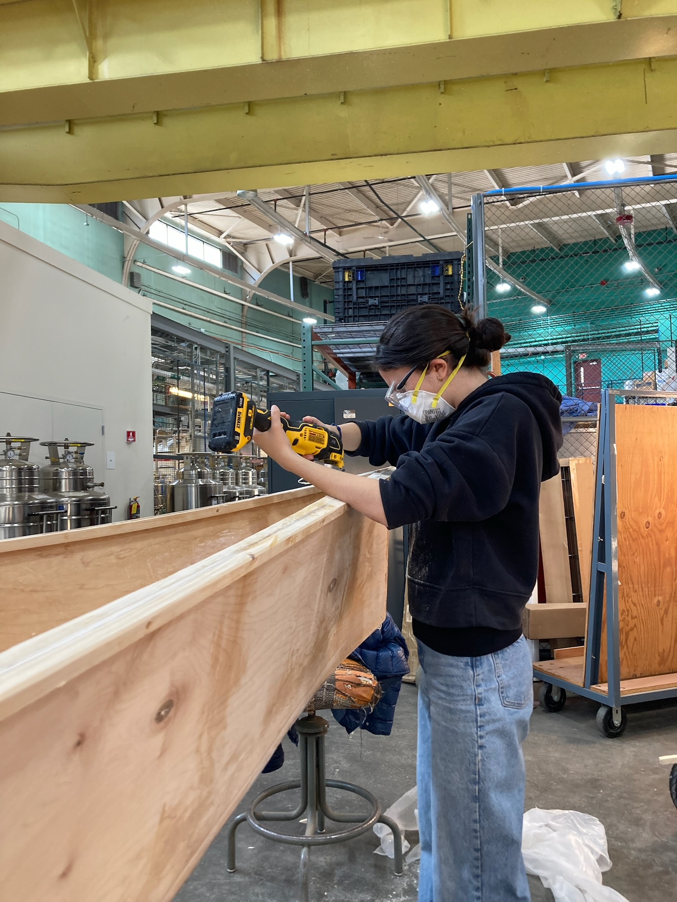

### Week 9: Boat Interior
Fit the inwales, knees, center spreader, and seats. Make any last-minute repairs or modifications to your boat.
#### Team speed docs
Our last touch was adding covers to the tips of our boats. We did this by sanding and oscillating down the ends of the inwales and then cutting out a piece of plywood scrap to fit in those holes.
Assignment: Document your work on your team’s website. Reading: The Craftsman, Part 3 (pp. 241-296).


